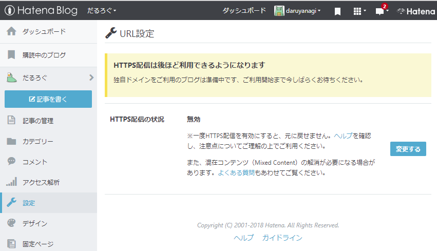
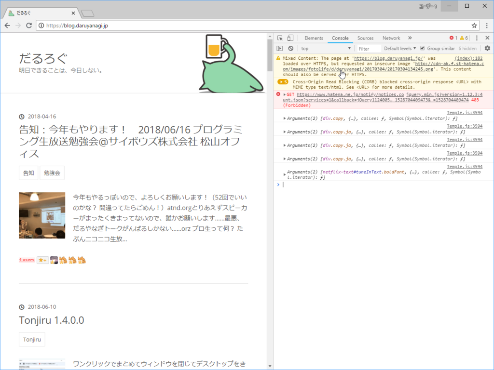
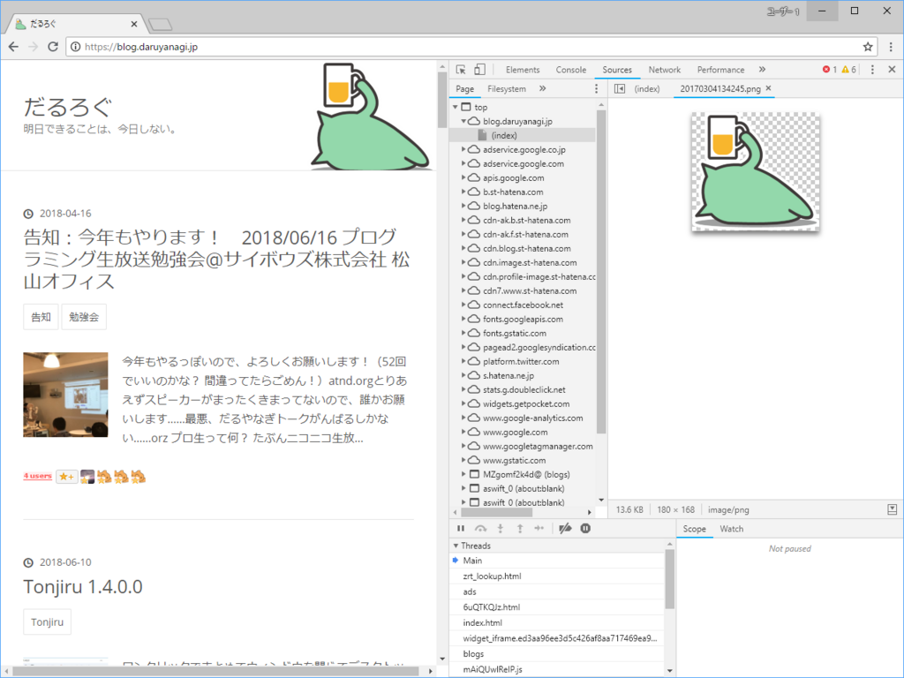

万歳＼(^o^)／ 独自ドメインのはてなブログが HTTPS になりました。
公開日：

いつからなのかよくわからないのですが、独自ドメインで運用しているはてなブログ（blog.daruyanagi.jp）でも HTTPS 化のボタンが押せるようになっていたので、ノリでプチっと押してみました。
ちょっとした好奇心が
— だる☆やなぎ (@daruyanagi) 2018年6月11日
だるろぐを
傷つけた pic.twitter.com/DIwS9zrxG8
みごと死にました……が、よくわかんないけどじきに直ったのでよし。でも、混在コンテンツ（mixed contents）があるみたいで、ページの一部が欠けている。
いろいろ手をくわえなきゃだめだなぁ、めんど（ pic.twitter.com/5WINwMJpxA
— だる☆やなぎ (@daruyanagi) 2018年6月11日
どうやら AdSense のスクリプトを HTTP で読み込んでいるみたいなので、http:// というところを探して // に書き換えました。これで将来的に httpsx:// みたいな謎プロトコルが爆誕してもコードを修正せずに済むような気がする。
AdSense はサクッと直したけど、画像はめんどいな？ pic.twitter.com/O7m3VoFnt5
— だる☆やなぎ (@daruyanagi) 2018年6月11日
これで広告は表示されるようになったのですが、まだどこか HTTP なリソースを読み込んでいるところがあるみたい。しょうがないので Google Chrome で［F12］キーを押して開発者ツールを起動。コンソールを眺めてみました。

最初の行に Mixed Contents の警告が出ていたので、リンクをクリックしてみます。

原因はお前か！！
この画像は自分でコードを追加したのではなく、はてなブログのデザイン機能で背景に指定しているものです。自分ではいじれないので、もはやこれまでか……と思ったのですが、ふと一度削除して再登録してみると、HTTP じゃなくて HTTPS で読み込まれるようになりました。
ただし、もとの画像は再登録で透過部分が黒くなってしまいます。まぁ、なにもなくてもいいのですが、それはそれで寂しいので、手持ちのしょぼい だるやなぎ 画像を登録しておきました。まぁ、枯れ木も山の賑わいってやつで。
できたー！画像しょっぱくなったけどｗｗｗ pic.twitter.com/0L6vSXiT1V
— だる☆やなぎ (@daruyanagi) 2018年6月11日
個別ページではまだエラーが出るかもしれませんが、それはおいおい修正していくことにして、今回の任務はこれで完了。これでセキュアなだるろぐになった！
――なお、メインページ（daruyanagi.jp：Azure Web Sites 製）は放置の模様。こっちもそのうち何とかしよう……Let's encrypt は触ったことないけど、こういうのも勉強になるはず。